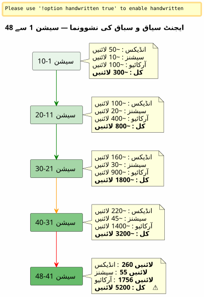

سلائیڈنگ ونڈو اور کولڈ ویو: جب ایجنٹ کانٹیکسٹ حد سے بڑھ جائے اور ڈیٹا ضائع کیے بغیر آرکائیو کرنا ضروری ہو
شائع شدہ: 26 April 2026
خلاصہ
ایک ہی پروجیکٹ پر 48 سیشنز اور مجموعی طور پر 150+ سے زیادہ کے بعد، جس Eager/Lazy حکمرانی سسٹم کو میں نے دقت سے بنایا تھا، سانس گھٹنے لگا۔ ایجنٹ فائلوں کا وزن، جو ہلک ہونے کی امید تھی، 5200 لکیروں کے مجموعے میں پہنچ گیا۔ خود بخود لوڈ ہونے والا mere قابلیت کو کنٹرول کرنے کی طاقت سے زیادہ رفتار سے بڑھ رہا تھا۔ یہ مضامین بتاتا ہے کہ میں نے backup کا ایک میکانیزم تخیلی بنایا — sliding window اور identical cold wave کے درمیان — تاکہ ایک ہلکہ فعال context برقرار رکھا جا سکے، کبھی بھی کچھ ضائع نہ ہو۔
سیگنال : 5200 líneas
میں سیشن 048 کے درمیان ہوں پر`magic-stick`, میرا لائنکس لايف ISO بنانے کا پروجیکٹ۔ اوپن کُوڈ مجھے دیکھ رہا ہے۔ ہمیشہ کی طرح، اس نے خودکار طور پر میری Eager فائلیں سیشن کے ابتداء میں لوڈ کردی —AGENT.adoc, PROMPT_REPRISE.adoc, `.agents/INDEX.adoc`کچھ بھی غیر معمولی نہیں۔
مگر کسی چیز میں غلطی ہے۔ جوابات پہلے سے زیادہ دیر سے آتی ہیں۔دلالہ پہلے سے کم مضبوط ہے۔ایجنٹ پہلے کے دو پیغامات کے ساتھ سامنے آنے والی تفصیلات بھول جاتا ہے۔
میں ٹرمینل کھولتا ہوں اور لکھتا ہوں:
wc -l .agents/INDEX.adoc .agents/SESSIONS_HISTORY.adoc \
.agents/archives/COMPLETED_TASKS_ARCHIVE_2026-04.adocINDEX کے لیے 260 لائنیں. SESSIONS_HISTORY کے لیے 55 لائنیںCOMPLETED_TASKS_ARCHIVE کے لیے 1756.
فائل`sessions/`مزید ~3200 لائنز شامل کیے جاتے ہیں۔ مجموعہ :5200 lignesسیاقاتی جو لوڈ ہوتی ہیں، ایک طریقے یا دوسرے طریقے سے، ایجنٹ کے مؤقت دماغ میں۔
پچھلے مضمون میں میں نے ایجر/لیزی حکمت عملی کا نظریہ پیش کیا تھا — یہ کام کر رہا ہے لیکن اس کی پیدائشی خامی ہے جو میں نے پیش بینی نہیں کی تھی : وہ نہیںعمران کا کوئی میزان نہیں. ہر سیشن میں INDEX میں ایک خط شامل ہوتی ہے، COMPLETED_TASKS میں ایک پاراگراف، sessions/ میں ایک فائل۔ کبھی کچھ außen نہیں ہوتا۔ سیاق و سباق برف کی گولہ کی طرح ہے جو ہر نئی سیشن کے ساتھ بڑھتا جاتا ہے۔

یہ ایک بگ نہیں، یہ سیشن ختم ہونے کی کاروائی کا مستقیم نتیجہ ہے جو ہر تفصیل کو محفوظ کرتا ہے۔ نظام اپنی کامیابی کا شिकार ہے۔
تشخیص : ٹرپل رڈنڈنسی
میں ایجنٹ سے مسئلے کی تشخیص کرنے کی درخواست کرتا ہوں۔ اس کا جواب فوری اور سرنگی ہے۔
فائل |
لائن |
نقش |
مسئلہ |
|
260+ |
EAGER (خود چارج) |
جدول تمام سشنز 001 سے —+1 لائن لكل سیشن |
|
55 |
جوشیلہ |
خلاصہ جدول —INDEX کے ساتھ باہمیریتی |
|
1756 |
خواہش مند (ضمنی) |
اپریل کی تمام سیشنز کے مکمل تفصیلات |
|
~5200 total |
سست (مفترض) |
فردی آرکائو، لیکنان استعمال نہیں کی گئیکيونکہ سب کچھ پہلے سے COMPLETED_TASKS میں موجود ہے |
ایجنٹ چار جڑ کے سباب کی شناخت کرتا ہے :
-
COMPLETED_TASKS_ARCHIVE سب کچھ سوختا ہے— بجای محفوظات کی طرف اشارہ کرنے کے`.sessions/`, وہ مکمل طور پر ہر سیشن کی نقل کرتا ہے۔
-
INDEX.adoc مکمل تاریخ کے طور پر کام کرتا ہے— میز 'ہالی سیشنز' 30+ مضامین رکھتی ہے۔
-
SESSIONS_HISTORY.adoc مکرر— معلومات مثل INDEX، مختلف فارمیٹ.
-
LAZY قاعدہ کا پیروی نہیں کیا جاتا— COMPLETED_TASKS ضمنا EAGER ہے کیونکہ یہ سب کچھ شامل کرتا ہے۔
اس کی تجویز رادیکل ہے: INDEX کو 10 سیشنز تک محدود کرنا، COMPLETED_TASKS کو خالی کرنا، SESSIONS_HISTORY کو LAZY میں منتقل کرنا. فوری فائدہ :~1900 لائن بچاو.
یہ صاف، مؤثر اور منطقی ہے۔ لیکن اسApproach کے ساتھ میرے پاس ایک مسئلہ ہے۔
میں واضح حل کو کیوں مسترد کردیا؟
ایجنٹ کا حل ایک انجینیر کے حل کی طرح ہے جو ایک کیش کو بہتر بناتا ہے۔ محدود کریں۔ کٹائیں۔ تزاحمات کو ہٹائیں۔
لیکن یہ 'ریڈانڈنس' نہیں ہیں۔ ہر گورننس فائل ایک چیز کو پکڑتی ہے۔مختلف زاویہنفس حقیقت :
-
فهرست= کلنگر ناظر، ایجیکٹیو ڈیش بورڈ
-
SESSIONS_HISTORY= خُطِّی تاریخی جدول، نمرہ والا
-
COMPLETED_TASKS_ARCHIVE= تفصیلی روایت کے ساتھ میٹرکس
-
sessions/*.adoc = محفوظات فردی، مکمل سیاق و سباق
یہ بےذکا ڈپلیکیشن نہیں ہے۔ یہمنظور متعدد منظم. یہ وہی چیز ہے جس کی ضرورت ہے اس کو ڈسٹل کرنے کی — تاکہ بعد میں ایک انسان (یا ایک مستقبل میں بہتر تربیت یافتہ LLM) زاویے کر سکتے ہیں اور پیٹرن نکال سکتے ہیں۔
ایک ڈیٹا سائنست کی تخیل کریں جو آپ سے کہتا ہے: « ہم 6 میں سے 3 کالمز حذف کریں، وہ رابطت رکھتے ہیں۔ » آپ Us سے کیا جواب دیتے ہو؟ کہ رابطت بے لازمی نہیں جب ہر کالم ایک ہی واقعہ کی مختلف بعد کو پکڑتی ہے۔ یہی بعد کی کثرت ڈیٹا سेट کو قابل استعمال بناتی ہے۔
یہ میری انتیحدار ہے۔ اور میں اسے ایجن کی سَردِ عُقلیت کے مقابلے میں دفاع کرتا ہوں۔
_ میں apni خیال میں خاموش مجموعہ نہیں دیکھتا۔ ہم سب کچھ بھری نہیں کرتے، ہم سیشن کے اختتام کے عمل کا منظم نتیجہ منتقل کرتے ہیں — ہر فائل اس کی زاویہ، اس کے اضافی پہلو جو درحقیقت ایک增值 ہیں۔ یہ多维的材料 distillation کے لیے بہتر ہوگی۔ _
ایجنٹ ضرب کھاتا ہے۔ اور خود کو درست کرتا ہے۔
تجویز : ٹھانڈی لہر یکساں
ایجنت پھر ایک زیادہ دقیق مکانیزم پیش کرتا ہے جو میرے غنی ڈیٹ سیٹ کے حدس کو محفوظ رکھتے ہوئے سیاق کے پھٹنے والے تکنیکی مسئلے کا حل کرتا ہے۔
مبدأ سادہ ہے اور یہ pattern سے مستقیم طور پر متاثر ہےگرم/گرم/ٹھنڈے سٹوریجآرکائیو منیجمنٹ پر لاگو:
-
گرم (بے صبر)= پچھلے 10 سیشن INDEX, PROMPT_REPRISE میں سیشن N+1 کا، سیشن کے 2 آخری فائِل
-
گرم (سست)= SESSIONS_HISTORY حالیہ, SCRIPT_VERIFICATION, تمام حوالہ جات کی documentation
-
Cold (backup/)سب چیز باقی، منتقلسالم, без تبدیلی، без دوبارہ انڈیگزیشن
----
----
----
----
.agents/
├── INDEX.adoc → Sessions N-9 à N (10 dernières)
├── SESSIONS_HISTORY.adoc → Sessions N-9 à N
├── SCRIPT_VERIFICATION.adoc → Dernière vérif (pas d'historique)
├── PROMPT_REPRISE.adoc → Session N+1 uniquement
├── sessions/ → Sessions N-1 à N uniquement
└── backup/
└── Y2026-sessions-001-039/ ← Vague froide, COPIE INTÉGRALE
├── INDEX.adoc → Sessions 001 à 039 (complet)
├── SESSIONS_HISTORY.adoc → Sessions 001 à 039 (complet)
├── COMPLETED_TASKS_ARCHIVE.adoc → Sessions 001 à 039 (complet)
└── sessions/ → 001.adoc, 002.adoc...
----
ميكانزم کا کلید:**بیکاپ مرکزی انڈیکس نہیں، یہ گزر ہوئی لہر کی ایک مطابقت رکھنے والی کاپی ہے۔**. جب ہم 10 فعال سیشنز کی حد سے باہر نکل جاتے ہیں، ہم کچھ بھی حذف نہیں کرتے۔ ہم دوبارہ انڈکس نہیں کرتے۔ ہم کچھ بھی ملانے نہیں۔ ہم ایجنٹ فائلز کے پیکیج کو وہی صورت میں لے جاتے ہیں جیسا وہ سیشن N-10 میں تھا۔ اور ہم اسے ... میں منتقل کرتے ہیں`backup/`.
فعال فائلز، وہ، منقطہ ہیں :
* INDEX: صرف 10 آخری لائنوں (sliding window)
* SESSIONS_HISTORY : آسی
* COMPLETED_TASKS_ARCHIVE : موجودہ مدت کے لیے نئی فائل
* sessions/ : صرف 2 آخر سیشن
[plantuml, format=svg, id=diag-hot-warm-cold, alt="Architecture Hot/Warm/Cold du contexte agent — EAGER/LAZY/backup"]
----
@startuml
skinparam backgroundColor #FEFEFE
skinparam defaultTextAlignment center
skinparam wrapWidth 200
title معماریت Hot / Warm / Cold کا سیاق ایجنٹ
package "HOT (EAGER)\nآٹوماتیک طور پر لوڈ کیا گیا\n~300 لائن" as HOT #FFCDD2 {
file "INDEX.adoc\n(10 سیشن)" as IDX_HOT
file "PROMPT_REPRISE\n(session N+1)" as PRO_HOT
file "AGENT.adoc\n(مطلق قواعد)" as AG_HOT
}
package "WARM (LAZY)\nمطالبے پر لاڈ\n~500 خطوط" as WARM #FFF9C4 {
file "SESSIONS_HISTORY\n(پچھلے 10)" as HIS_WARM
file "SCRIPT_VERIFICATION\n(آخری)" as VER_WARM
file "PROCEDURES.adoc\n(templates)" as PRO_WARM
file "*_REFERENCE.adoc\n(تقنی مستند)" as REF_WARM
}
package "COLD (backup/)\nکبھی بار نہیں\nصرف انسانی پڑھائی" as COLD #BBDEFB {
folder "Y2026-001-039/" as WAVE {
file "INDEX (مکمل)" as IDX_COLD
file "SESSIONS_HISTORY\n(مکمل)" as HIS_COLD
file "COMPLETED_TASKS\n(مکمل)" as ARCH_COLD
folder "سیشن/ (001-039)" as SESS_COLD
}
folder "Y2026-040-???\n(Mustaqbil)" as FUTURE
}
HOT --> WARM : "ایجن اوپر چلتا ہے\nاگر ضرورت ہو"
WARM --> COLD : "کبھی خودکار نہیں\nانسان اکیلا وہاں جاتا ہے"
note bottom of COLD
Règle : COPIE INTÉGRALE
Pas de transformation
Pas de réindexation
Read-only après archivage
end note
@enduml
----
فوری فائدہ عظیم ہے : EAGER کا سیاق گزرے سے**~5200 سطر سے ~300 سطر**. 17 سے ایک تقسیم۔ کسی بھی تاریخی ڈیٹا کی ایک سطر نہیں گم ہوئی۔
== یہ کیوں سب کچھ رکھنے والا نہیں ہے؟
ایجنٹ اپنی پہلی آٹریشن میں خوف محسوس کر رہا تھا کہ`backup/`ایک سیاہ ڈبے میں تبدیل ہو جانا — ایک فائلوں کا ڈھیر جہاں ہم فائلز ڈالتے ہیں جنہیں ہم دوبارہ نہیں پڑھتے۔ یہ ایک منطقی خوف ہے۔ لیکن اس کی بنیاد ایک گھلت فہمی پر ہوتی ہے۔
ایک کبڑہ، جب فائلیں phenki jati hain**بے ڈھانچے، بے عہد، grouping کے بغیر منطق**۔ یہاں، backup کو period (Y2026-001-039) کے لحاظ سے منظم کیا جاتا ہے، اور ہر backup ڈائریکٹری شامل ہے**یہی ڈھانچہ**وہ فائل`.agents/`فعال : INDEX, SESSIONS_HISTORY, COMPLETED_TASKS_ARCHIVE, sessions/
یہ کچل نہیں ہے۔ یہ ایک**ٹائم اسٹامپ شدہ اسنیپشاٹ**. ایسے کہا جا سکتا ہے کہ یہ ایک سادہ ورژننگ کا ماخذ ہے — به اس حد تک کہ یہ individual فائلوں کو ورژن نہیں دیتا، بلکہ گورننس کے مکمل پاكج کو ایک معین وقت پر ورژن دیتا ہے۔
جب آپ پرانی معلومات تلاش کرنا چاہتے ہیں، آپ کے پاس مرکزی انکس کی ضرورت نہیں ہوتی۔ آپ کے دو اختیار ہیں۔
1. **grep` مستهدف**:`grep -r "zsh" backup/Y2026-001-039/`— اور آپ اس مدت میں zsh ka zikr karnay wali sab cheez dhoondhte hain, jis ki koi bhi zāwiyah ho (INDEX, SESSIONS_HISTORY, session ka arkheev).
2. **مانوئل ری انٹیگریشن**: آپ بیک اپ فوڈر کو موقتاً فعال ماحول میں کپی کرتے ہیں، اور آپ ایجنٹ سے یہ خاص مدت کا تجزیہ کرنے کی طلب کرتے ہیں۔
انڈکس ضمنا ہے۔ یہ فائلوں کی ذاتی ساخت میں موجود ہے — ہر ایک پہلے سے apni ziyādat se aik index ہے۔
== استعارہِ رفوف
میکانیزم کو آسان بنانے کے لیے، میں نے اسے تین سطحو پر تصور کیا:
* **رک 1 (EAGER)**— کام کا منصوبہ. مجھے ضرورت ہے *maintenant*. INDEX ہالیے, PROMPT_REPRISE, مطلق قواعد. ہلکا، فوری، اہم.
* **شلف 2 (LAZY)**مشاورہ لائبریری. جسے میں طلب پر لا سکتا ہوں. تکنیکی حولات، حالیہ تاریخ، عملاويں.زیادہ حجم والا، لیکن یاداشت میں لوڈ نہیں
* **غار (backup/)**— سرد آرکائیو۔ تمام جو گزر گیا ہے لیکن جو میں نہیں چاہتا ڈالوں۔ ایجنت کبھی داخل نہیں ہوتا۔ انسان جب بھی ڈسٹیلی کرنا چاہتا ہے تو نیچے چلتا ہے۔
ایجنٹ نے ابتداء Mein предложہ Tatsache چوتھی رکھال — ایک`index-backup.adoc`جس میں LAZY ہوگا اور تمام backup کی مضمون کی جدول شامل ہوگی۔ میں نے انکار کر دیا۔ یہ ایک نظام میں اضافی redundancy ہوگا جو پہلے سے ہی لکیری ترقی سے مصروف ہے۔ محفظہ شدہ فائلوں کی ساخت پہلے سے ہی ایک انڈیکس ہے۔
== دو ٹریگرز والا سنسور
مفہوم سازی مضبوط تھی، لیکن ایک بلائنڈ سپوٹ باقی رہا:**rotation کو کب بلكُل trigger کرنا ہے؟**ابتدائی مضامین نے اسے کھلا سوال قرار دیا تھا۔ دو دن بعد، جواب چھ پروジェक्टس کے حکمرانی کی فائلز میں کد شدہ ہے: دو ٹriger والے ایک سنسور.
=== خودکار ٹرگر — `N % 10 == 0
پہلا ٹریگر ریاضیاتی ہے۔ جب سیشن نمبر 10 کا مضروب ہو — سیشن 10، 20، 30، 40 — بیک اپ روٹیشن خودکار طور پر سیشن کے اختتام کے عمل میں چلتا ہے، صرف سٹپ 6 کے بعد۔
کیوں 10؟ یہ دو متقابل قوتوں کے درمیان ایک تساوی ہے: ایک تھوڑی سی وینڈو (5 سیشن) continuity کے لئے ضروری سیاق و سباق کو کھو دیتی ہے؛ ایک لمبی وینڈو (20 سیشن) سیاق و سباق کی اضافتی وزن کی masalah کو حل نہیں کرتی۔ دس سیشن، ایک دن میں ایک سے دو سیشن کی رفتار پر، تقریباً ایک ہفتے کے کام کو ڈھانپ لیتی ہیں — agent کے لئے کافی ہے تاہے وہ حالیہ فیصلات کو یاد رکھ sake، لیکن بس یہقدر کہ سیاق و سباق بڑھ کر explode نہ ہو۔
=== سیل سے ٹریگر — 500 لائن EAGER
دوسر ٹرگرر داینامک ہے۔ سیشن نمبر کے بغیر، اگر EAGER فائلوں کا مجموعہ زیادہ ہو جائیں**500 لائن**, چکر شروع ہو جاتا ہے.
یہ حد اس سيناريو سے حفاظت کرتی ہے جہاں سیشنें extraordinarily productive ہوتی ہیں — Bohot si content bahut kam sessions mein likha jata hai. Ek session jo 120 Lainon ka تحريری materiāl paida karti hai, COMPLETED_TASKS_ARCHIVE ko debug session ki taraf se do likhain theek karne wali session se ziyada jaldi barhati hai. 500 Lainon ka limit, nap jaanay ke zariye`wc -l .agents/INDEX.adoc .agents/archives/COMPLETED_TASKS_ARCHIVE_*.adoc PROMPT_REPRISE.adoc`, یہ اس असimetry کو پکڑتا ہے.
=== منوئیل ٹریجر — "rotation backup
آخر، انسان قابو رکھتا ہے. کلیدی الفاظ`rotation backup`, `backup rotation` ou `lance la rotation backup`وہ طلب par طریقه کار کو شروع کرتے ہیں، سیشن کے خاتمے سے مستقل۔ مفید جب محسوس ہو کہ سیاق‑و‑بیت بھار اٹھ رہا ہے لیکن ابھی تک 10 کا مضرب نہیں ہوا، یا جب کسی کام کے مرحلے کو محفوظ کرنا چاہتے ہوں قبلیکے نئی مرحلہ شروع کریں۔
[plantuml, format=svg, id=diag-capteur-trigger, alt="Les trois déclencheurs du capteur de rotation backup — automatique, seuil, manuel"]
----
@startuml
skinparam backgroundColor #FEFEFE
skinparam defaultTextAlignment center
skinparam wrapWidth 200
title روٹیشن بک اپ سنسور — تین مشگل
start
:Procédure de fin de session;
note right: Mots-clés "سیشن کا اختتام"\nou "یہاں ہم رک جاتے ہیں"
:Étapes 1 à 6\n(archivage standard);
note right
1. Archive sessions/N.adoc
2. MAJ PROMPT_REPRISE
3. MAJ SESSIONS_HISTORY
4. MAJ INDEX.adoc
5. MAJ TEST_COVERAGE
6. MAJ COMPLETED_TASKS
end note
if (N % 10 == 0\nOU\nEAGER cumulé > 500 lignes ?) then (oui)
:⚙️ Rotation Backup\n(étape 7);
note right
1. Créer backup/Y20XX-sessions-X-Y/
2. Copier intégrale INDEX + HISTORY
+ COMPLETED_TASKS + sessions/
3. Tronquer actifs à 10 sessions
4. Ajouter _Localisation active_
end note
else (non)
:Pas de rotation;
endif
:Checklist [✅] x 7\n(si applicable);
stop
@enduml
----
یہ ڈایاگرام سیشن کے اختتام کی پروسیجر میں سنسور کی exact insertion دکھاتا ہے۔ مرحلہ 7 اختیاری ہے — یہ صرف دو شرائط میں سے ایک سچ ہونے پر صرف انجام دی جاتی ہے — لیکن یہ sistematically *verified* کی جاتی ہے۔ آخری چیک لسٹ شامل ہے`[✅] 7. Backup roté (si applicable)`.
=== بند لوپ
یہ سنسور پچھلے مضمون کے ذریعے کھلی ہوئی لوپ کو بند کرتا ہے۔ Eager/Lazy حکمرانی نے دو سیشنز کے درمیان ایجنڈ میموری کی مسئلے کو حل کر دیا تھا۔ Hot/Warm/Cold میکانزم نے بڑھتی ہوئی यादاشت کی مسئلے کو حل کر دیا۔ دو ٹریگر والا سنسور *کب* کے مسئلے کو حل کرتا ہے — انسان پر ذہنی بوجھ کو کم کرتے ہوئے سیاق و سباق کے حجم کی نگرانی کرنے کی ضرورت کو ख़त्म کر دیتا ہے۔
[plantuml, format=svg, id=diag-boucle-fermee, alt="Les trois couches de la gouvernance agent — Eager/Lazy, Hot/Warm/Cold, Capteur"]
----
@startuml
skinparam backgroundColor #FEFEFE
skinparam defaultTextAlignment center
title ایجنٹ حکمرانی کی تین طبقات
left to right direction
package "لیئر 1 — میموری\n(ماده 0108)" as C1 #E8F5E9 {
rectangle "**EAGER**\nڈیش بورڈ\nخود چارجر" as EAG
rectangle "**LAZY**\nمالک کا ہدایتی کتااب\nضرورت پر لوڈ" as LAZ
EAG -[hidden]right-> LAZ
}
package "طبہ 2 — ایجنگ\n(ماده 0110)" as C2 #FFF9C4 {
rectangle "**HOT**\n10 جلسات فعّالة\n~300 سطر" as HOT
rectangle "**WARM**\nحواليات\nعملیات" as WRM
rectangle "**COLD**\nbackup/\nسرد لہر" as CLD
HOT -[hidden]right-> WRM
WRM -[hidden]right-> CLD
}
package "Layer 3 — Trigger\n(آج)" as C3 #BBDEFB {
rectangle "اوٹو\nN % 10 == 0" as AUTO
rectangle "**حد**\n> 500 لائن" as SEUIL
rectangle "**Manuel**\nrotation backup" as MAN
AUTO -[hidden]right-> SEUIL
SEUIL -[hidden]right-> MAN
}
C1 --> C2 : "یاد بڑھتی ہے\n→ ایک آلية لازمی ہے\nبڑھاپے کا"
C2 --> C3 : "عمرانگی\n→ اس کو چلانے کے لیے ایک ٹریگر ضروری ہے\nاس کو انجام دینے کے لیے"
note bottom of C3
✅ Déployé sur 6 projets
magic-stick · bakery-gradle
plantuml-gradle · cheroliv.com
jhipster-gradle-plugins
quizz-benchmark-gradle
end note
@enduml
----
ثلاث طبقات منطقیً سے ڈھکلی ہوتی ہیں۔ پہلی layer الوکیل کو یاداشت دیتی ہے۔ دوسری layer یہ یاداشت کو الوکیل کو سانس لینے سے منع کرتی ہے۔ تیسری layer اس یاداشت کی مرمت کو خودکار بناتی ہے تاکہ انسان کو اس بارے میں سوچنے کی ضرورت نہ ہو۔
=== چرلویل ڈاٹ کام پر مؤثر میگریشن
مکانیزم نظریاتی نہیں رہا. پر`cheroliv.com`, پہلی بیک اپ روتیشن 29 اپریل 2026 کو انجام دی گئی — سیشنز -6 سے 2 تک منتقل ہوگئے`.agents/backup/Y2026-sessions-neg6-a-002/`:
|===
|فائل |چکر سے پہلے |Rotation کے بعد |فائدہ |`.agents/INDEX.adoc` |19 فہرست شدہ سیشنز |10 جلسات (3-12) |-9 مدخلات |`.agents/SESSIONS_HISTORY.adoc` |18 جلسات |10 جلسات |-8 ورودیوں |`COMPLETED_TASKS_ARCHIVE` |161 لائن (سیشنز 1-12) |135 لائن (جلسات 3-12) |-26 سطر |`sessions/` |20 فائلیں |10 فائلز |-10 فائلیں |**backup/** |غیرواقعی |1 سرد لہر (10 محفوظ سیشن) |+1 ٹھنڈا پاکِٹ
|===
پنکتیوں میں اضافہ کم تھا — نئی پروجيکٹ ہے — 12 سیشن — لیکن اہم یہ ہے کہ**مکانیزم قائم ہے**۔ اگلی خودکار گھومنا سیشن 20 پر شروع ہوگا، یا اگر 500 EAGER لائنें पुरी ہوں تو پہلے بھی۔
== انسان-ایجنٹ کا درس
یہ سیشن 048 مجھے AI ایجن کے ساتھ تعامل میں بنیادی چیز سکھائی۔
ایجنٹ کا فطری تعصب ہے: وہ تلاش کرتا ہے**بهتر بنانا**, à **سہل کرنا**, à **تکرارات کو حذف کرنا**. یہ ایک نظام کا بائس ہے جو پاک اور مختصر جواب دینے کے لیے تربیت یافہ ہے۔ امیر اور متعدد-بعدی ڈیٹا سے سامنا کرنے پر، اس کی پہلی ردعمل یہ ہے کہ اسے اس کی سب سے سادہ شکل میں کم کر دیے۔
انسان خود کا ایک مختلف حدس ہے: وہ محسوس کرتا ہے کہ منظم زائدگی ایک**فائدہ**, ایک نقصان نہیں۔ کہ ایک ہی حقیقت پر زاویات کی تنوع بالضبُط وہ ہے جو بعد میں عالی معیار کی تقطیر کی اجازت دے گا۔
ایسے نہیں ہے کہ ایجنٹ غلط ہے۔ بلکہ اس کا 'optimum' میرا نہیں ہے۔ ایجنٹ بہتر بناتا ہے کے لیے**موجود**— فوری سیاق، پوچھے گئے سوال کا جلدِ جواب. انسان اسے بہتر بناتا ہے**مستقبل**— دوبارہ دریافت کرنے، تقابل کرنے، خالص کرنے کی قابلیت تین ماہ یا تین سال میں
____ مجھے جو چاہئے وہ خام مادہ ہے۔ تمہاری خیالات، تمہاری جھجھک، میرے سوالوں کے جوابات۔ تمہاری خلاصت نہیں۔ میں خلاصت بنانا آپ سے بہتر جانتا ہوں۔ میں پہلی مواد چاہتا ہوں۔ ____
یہ جملہ جو میں نے سیشن کے خاتمے پر اسے کہا تھا، سب کچھ مختصر کر دیتا ہے۔ ایجنٹ پیدا کرنے کا اوزار ہے۔ انسان تقطیع کا اوزار ہے۔ گورننس ایجنٹ کو اس لیے بنائی گئی نہیں ہے کہ وہ خود سب چیز سمجھے — بلکہ انسان کو بعد میں پیدا کردہ مادہ پر کام کرنے کے لیے بنائی گئی ہے۔
متبادل ٹھنڈی لہر اس فلسفے کی معمار ترجمہ ہے: کچھ نہیں پھینکنا، کچھ نہیں ملانا، کچھ نہیں دوبارہ انڈیکس کرنا۔ ہم مکمل پکیج کو جگہ بدل دیتے ہیں۔ ڈسٹیلیشن بعد میں آئے گی، ہاتھ سے، انسان کے ذریعے۔
== پچھلے مضمون کا منطقی جاری
اگر آپ نے پڑھا ہےlink:/blog/2026/0108_gouvernance_agent_opencode_eager_lazy_post.html[مضمون Eager/Lazy استراتژی کے بارے میں], آپ فطری ترقی کی شناخت کریں گے:
1. **ماده 0108**— آگر/لیزی گورننس : *کیسے* ایجنٹ سیاق کو دستیابی کے دو درجوں میں بنائیں
2. **یہ مضمون 0110**— بیک اپ کا نظام: *comment* اس سیاق کو عمرانا بinahe گم کیے بغیر جب یہ بہت بڑھ جاتا ہے
پہلا مضافہ سوال کا جواب دے رہا تھا: « ایجنٹ دو سیشنز کے درمیان کچھ نہیں یاد رکھتا، اسے کس طرح یاد دیا جا سکتا ہے؟
یہ پہلے سے محتوم طور پر آئنے والی سوال کا جواب دیتا ہے: « محفوظہ ہر سیشن میں بڑھتی ہے، کسی طریقے سے agent کو گھونٹنے سے روکنا ممکن ہے بغير usko mitaae؟
جواب ایک پيٹرن میں ہے:**گرم/گرم/ٹھنڈا**, حکمرانی کے فائلوں پر لاگو۔ اور ایک اصول کے طور پر :**کبھی بھی کچھ نہ گم کریں، ہمیشہ سب چیزیں نئی جگہ پر رکھیں**.
== لينک
* پچھلا مضمون :link:/blog/2026/0108_gouvernance_agent_opencode_eager_lazy_post.html[AsciiDoc کے ساتھ ایک AI ایجنت کا انتظام]
* میرا سائٹ : https://cheroliv.com
* پروجیکٹ`magic-stick`: https://github.com/cheroliv/magic-stick
---
ایک بہتر گورننس سسٹم کبھی ڈیٹا حذف نہیں کرتا۔ وہ ان کو محفوظ رکھتا ہے۔
----
----
میکانزم کی کلید:**بیک اپ کوئی مرکزی انڈیکس نہیں ہے، بلکہ یہ گزشتہ لہر کی ایک ہو بہو نقل ہے**جب ہم 10 فعال سیشنز کے افق سے آگے بڑھتے ہیں، تو ہم کچھ بھی حذف نہیں کرتے۔ ہم کچھ بھی دوبارہ انڈیکس نہیں کرتے۔ ہم کچھ بھی ضم نہیں کرتے۔ ہم ایجنٹ فائلوں کے پیکٹ کو ویسے ہی لیتے ہیں جیسا کہ وہ سیشن N-10 میں تھا، اور اسے منتقل کرتے ہیں میں`backup/`آپ ایک پیشہ ور مترجم ہیں۔ فرانسیسی سے اردو میں ترجمہ کریں۔
تمام بیک ٹِک کوڈ اسپینز (`...`) کو بالکل ویسا ہی رہنے دیں — بیک ٹِک کے مواد، اسپیسنگ یا پوزیشن میں کبھی تبدیلی نہ کریں۔
یہ متن ایک بڑے جملے کا ٹکڑا ہو سکتا ہے — مزید سیاق و سباق طلب کیے بغیر اس ٹکڑے کا ترجمہ کریں۔
صرف ترجمہ شدہ متن فراہم کریں — کوئی وضاحت، کوئی تبصرہ، کوئی تعارف، کوئی متبادل، یا کوئی آپشن نہیں ہونا چاہیے۔
فعال فائلیں، دوسری طرف، کاٹ دی گئی ہیں:
* انڈیکس : صرف آخری 10 لائنیں (sliding window)
* SESSIONS_HISTORY : وہی
* COMPLETED_TASKS_ARCHIVE : موجودہ مدت کے لیے نئی فائل
* sessions/ : صرف آخری 2 سیشنز
[plantuml, format=svg, id=diag-hot-warm-cold, alt="Architecture Hot/Warm/Cold du contexte agent — EAGER/LAZY/backup"]
----
@startuml
skinparam backgroundColor #FEFEFE
skinparam defaultTextAlignment center
skinparam wrapWidth 200
title ایجنٹ سیاق و سباق کا Hot / Warm / Cold آرکیٹیکچر
package "HOT (EAGER)\nخودکار طور پر لوڈ شدہ\n~300 لائنیں" as HOT #FFCDD2 {
file "INDEX.adoc\n(10 سیشنز)" as IDX_HOT
file "PROMPT_REPRISE\n(سیشن N+1)" as PRO_HOT
file "AGENT.adoc\n(حتمی قواعد)" as AG_HOT
}
package "WARM (LAZY)\nمطالبے پر لوڈ شدہ\n~500 لائنیں" as WARM #FFF9C4 {
file "SESSIONS_HISTORY\n(آخری 10)" as HIS_WARM
file "SCRIPT_VERIFICATION\n(آخری)" as VER_WARM
file "PROCEDURES.adoc\n(ٹیمپلیٹس)" as PRO_WARM
file "*_REFERENCE.adoc\n(تکنیکی دستاویز)" as REF_WARM
}
package "COLD (backup/)\nکبھی لوڈ نہیں کیا گیا\nصرف انسانی مطالعہ کے لیے" as COLD #BBDEFB {
folder "Y2026-001-039/" as WAVE {
file "INDEX (مکمل)" as IDX_COLD
file "SESSIONS_HISTORY\n(مکمل)" as HIS_COLD
file "COMPLETED_TASKS\n(مکمل)" as ARCH_COLD
folder "sessions/ (001-039)" as SESS_COLD
}
folder "Y2026-040-???\n(مستقبل)" as FUTURE
}
HOT --> WARM : "ایجنٹ ضرورت پڑنے\nپر واپس لاتا ہے"
WARM --> COLD : "کبھی خودکار نہیں\nانسان خود وہاں جاتا ہے"
note bottom of COLD
قاعدہ: مکمل نقل
کوئی تبدیلی نہیں
کوئی دوبارہ انڈیکسنگ نہیں
آرکائیو کے بعد صرف پڑھنے کے لیے (Read-only)
end note
@enduml
----
فوری فائدہ بہت زیادہ ہے: EAGER سیاق و سباق (context) تبدیل ہو کر سے**~5200 لائنیں سے ~300 لائنیں تک**17 سے تقسیم۔ تاریخی ڈیٹا کی ایک بھی لائن کھوئے بغیر۔
== یہ کوئی سب کچھ ڈالنے والی جگہ (Fourre-Tout) کیوں نہیں ہے
ایجنٹ نے، اپنی پہلی تکرار (iteration) میں، یہ خدشہ کیا کہ`backup/`ایک بلیک باکس بن جائے — ایک ایسا فولڈر جس میں ایسی فائلیں پھینک دی جائیں جنہیں کبھی دوبارہ نہیں پڑھا جائے گا۔ یہ ایک جائز خوف ہے۔ لیکن یہ ایک غلط فہمی پر مبنی ہے۔
ایک 'fourre-tout' تب ہوتا ہے جب ہم فائلوں کو پھینک دیتے ہیں**بغیر کسی ساختار کے، بغیر کسی روایت کے، گروہ بندی کی منطق کے بغیر**یہاں، بیک اپ مدت کے لحاظ سے ترتیب دیا گیا ہے (`Y2026-001-039`)، اور بیک اپ کا ہر فولڈر مشتمل ہے**وہی ساخت**کہ فائل`.agents/`فعال: `INDEX`, `SESSIONS_HISTORY`, `COMPLETED_TASKS_ARCHIVE`, `sessions/`۔
یہ کوئی کھلے عام سب کچھ ڈالنے والی جگہ نہیں ہے۔ یہ ایک**ٹائم اسٹیمپڈ snapshot**یہ بھی کہا جا سکتا ہے کہ یہ ورژننگ (versioning) کا ایک سادہ میکانزم ہے — اس فرق کے ساتھ کہ یہ انفرادی فائلوں کی ورژننگ نہیں کرتا، بلکہ کسی خاص وقت T پر گورننس کے مکمل پیکج کی ورژننگ کرتا ہے۔
جب آپ کوئی پرانی معلومات دوبارہ تلاش کرنا چاہتے ہیں، تو آپ کو کسی مرکزی انڈیکس کی ضرورت نہیں ہوتی۔ آپ کے پاس دو آپشنز ہیں:
1. **ہدف شدہ `grep**براہ کرم اپنی `API key` فراہم کریں۔`grep -r "zsh" backup/Y2026-001-039/`— اور آپ کو اس مدت کے دوران `zsh` کا ذکر کرنے والی ہر چیز مل جائے گی، چاہے وہ کسی بھی زاویے سے ہو (`INDEX`, `SESSIONS_HISTORY`, سیشن آرکائیو)۔
2. **دستی بحالی**: آپ عارضی طور پر بیک اپ فولڈر کو فعال سیاق و سباق (active context) میں کاپی کرتے ہیں، اور ایجنٹ سے اس مخصوص مدت کا تجزیہ کرنے کے لیے کہتے ہیں۔
انڈیکس ضمنی ہے۔ یہ فائلوں کی اپنی ساخت میں موجود ہے — جس میں ہر ایک پہلے سے ہی اپنے زاویے سے ایک انڈیکس ہے۔
== شیلفوں کا استعارہ
میکانزم کو بدیہی بنانے کے لیے، میں نے اسے تین شیلف (étagères) کے طور پر تصور کیا ہے:
* **شیلف 1 (EAGER)**— ورک پلان۔ جس چیز کی مجھے *اب* ضرورت ہے۔ حالیہ INDEX، PROMPT_REPRISE، مطلق اصول۔ ہلکا، فوری، اہم۔
* **شیلف 2 (LAZY)**— مشاوراتی لائبریری۔ وہ چیزیں جو میں طلب پر تلاش کر سکتا ہوں۔ تکنیکی حوالے، حالیہ تاریخ، طریقہ کار۔ زیادہ voluminous، لیکن میموری میں لوڈ نہیں کیا۔
* **غار (backup/)**— کولڈ آرکائیوز (cold archives)۔ وہ سب کچھ جو گزر چکا ہے لیکن میں اسے پھینکنا نہیں چاہتا۔ ایجنٹ وہاں کبھی نہیں جاتا۔ انسان وہاں تب اترتا ہے جب وہ ڈسٹل (distill) کرنا چاہتا ہو۔
ایجنٹ نے شروع میں چوتھی شیلف کی تجویز کی تھی — ایک`index-backup.adoc`جو `LAZY` ہوگا اور جس میں پورے بیک اپ کی فہرست (table of contents) شامل ہوگی۔ میں نے انکار کر دیا۔ یہ ایک ایسے سسٹم میں مزید ایک اضافی تکرار (redundancy) ہوتی جو پہلے ہی لینیئر گروتھ (linear growth) کا شکار ہے۔ آرکائیو کی گئی فائلوں کی ساخت پہلے ہی ایک انڈیکس ہے۔
== دو ٹریگرز والا سینسر
تصور مضبوط تھا، لیکن ایک پہلو نظر انداز رہ گیا تھا:**روٹیشن کو ٹھیک کس وقت شروع کیا جائے؟**ابتدائی مضمون نے اسے ایک کھلے سوال کے طور پر شناخت کیا تھا۔ دو دن بعد، جواب چھ پروجیکٹس کی گورننس فائلوں میں کوڈ کیا گیا: ایک دو ٹرگرز والا سینسر۔
=== آٹومیٹک ٹرگر — `N % 10 == 0
پہلا محرک ریاضیاتی ہے۔ جب سیشن نمبر 10 کا ملٹی پل ہو — سیشن 10، 20، 30، 40 — تو بیک اپ روٹیشن سیشن کے اختتامی طریقہ کار کے اندر، مرحلہ 6 کے فوراً بعد خود بخود چلتا ہے۔
10 کیوں؟ یہ دو متضاد قوتوں کے درمیان ایک سمجھوتہ ہے: بہت چھوٹا ونڈو (5 سیشنز) تسلسل کے لیے ضروری سیاق و سباق (context) کو کھو دیتا ہے؛ بہت بڑا ونڈو (20 سیشنز) سیاق و سباق کے بڑھتے ہوئے حجم (embonpoint) کے مسئلے کو حل نہیں کرتا۔ دن میں ایک سے دو سیشنز کی شرح سے، دس سیشنز تقریباً ایک ہفتے کے کام کا احاطہ کرتے ہیں — اتنا کہ ایجنٹ حالیہ فیصلوں کو یاد رکھ سکے، لیکن اتنا نہیں کہ سیاق و سباق حد سے بڑھ جائے۔
=== تھریشولڈ ٹرگر — 500 Lignes EAGER
دوسرا ٹرگر ڈائنامک ہے۔ سیشن نمبر سے قطع نظر، اگر مجموعی EAGER فائلیں تجاوز کریں**500 لائنیں**، گردش شروع ہو جاتی ہے۔
یہ حد اس صورتحال سے بچاتی ہے جہاں سیشنز غیر معمولی طور پر نتیجہ خیز ہوتے ہیں — یعنی بہت کم سیشنز میں بہت زیادہ مواد لکھا جاتا ہے۔ ایک سیشن جو ادارتی مواد کی 120 لائنیں تیار کرتا ہے، وہ `COMPLETED_TASKS_ARCHIVE` کو ایک ایسے ڈیبگ سیشن کے مقابلے میں بہت زیادہ تیزی سے بڑھاتا ہے جو صرف دو لائنیں درست کرتا ہے۔ 500 لائنوں کی حد، جس کی پیمائش کے لیے`wc -l .agents/INDEX.adoc .agents/archives/COMPLETED_TASKS_ARCHIVE_*.adoc PROMPT_REPRISE.adoc`، اس عدم توازن کو سمجھتا ہے۔
=== مینول ٹرگر — "rotation backup
آخر میں، انسان کا کنٹرول رہتا ہے۔ کلیدی الفاظ`rotation backup`, `backup rotation` ou `lance la rotation backup`درخواست پر طریقہ کار کو فعال کرتے ہیں، سیشن کے خاتمے سے незалеزہ۔ یہ تب مفید ہوتا ہے جب محسوس ہو کہ سیاق و سباق (context) بھاری ہو رہا ہے لیکن ابھی 10 کا ملٹی پل نہیں ہوا، یا جب آپ نیا کام شروع کرنے سے پہلے کام کے ایک مرحلے کو آرکائیو کرنا چاہتے ہوں۔
[plantuml, format=svg, id=diag-capteur-trigger, alt="Les trois déclencheurs du capteur de rotation backup — automatique, seuil, manuel"]
----
@startuml
skinparam backgroundColor #FEFEFE
skinparam defaultTextAlignment center
skinparam wrapWidth 200
title بیک اپ روٹیشن سینسر — تین ٹرگرز
start
:Procédure de fin de session;
note right: Mots-clés "سیشن کا اختتام"\nou "ہم یہاں رکتے ہیں"
:Étapes 1 à 6\n(archivage standard);
note right
1. Archive sessions/N.adoc
2. PROMPT_REPRISE کی اپڈیٹ
3. SESSIONS_HISTORY کی اپڈیٹ
4. INDEX.adoc کی اپڈیٹ
5. TEST_COVERAGE کی اپڈیٹ
6. COMPLETED_TASKS کی اپڈیٹ
end note
if (N % 10 == 0\nOU\nEAGER cumulé > 500 lignes ?) then (oui)
:⚙️ Rotation Backup\n(étape 7);
note right
1. `backup/Y20XX-sessions-X-Y/` بنائیں
2. مکمل INDEX + HISTORY
+ COMPLETED_TASKS + `sessions/` کاپی کریں
3. فعال سیشنز کو 10 تک محدود کریں
4. _Localisation active_ شامل کریں
end note
else (non)
:Pas de rotation;
endif
:Checklist [✅] x 7\n(si applicable);
stop
@enduml
----
یہ ڈایاگرام سیشن کے اختتامی طریقہ کار میں سینسر کی درست اندراج کو ظاہر کرتا ہے۔ مرحلہ 7 اختیاری ہے — یہ صرف اس صورت میں چلتا ہے جب دو شرائط میں سے کوئی ایک درست ہو — لیکن اس کی مستقل طور پر *تصدیق* کی جاتی ہے۔ حتمی چیک لسٹ میں شامل ہے`[✅] 7. Backup roté (si applicable)`آپ ایک پیشہ ور مترجم ہیں۔ فرانسیسی سے اردو میں ترجمہ کریں۔
تمام بیکٹک کوڈ اسپینز (`...`) کو بالکل ویسے ہی محفوظ رکھیں — بیکٹک کے مواد، جگہ (spacing)، یا پوزیشن میں کبھی تبدیلی نہ کریں۔
یہ متن کسی بڑے جملے کا ایک حصہ ہو سکتا ہے — مزید سیاق و سباق کی درخواست کیے بغیر اس حصے کا ترجمہ کریں۔
صرف ترجمہ شدہ متن فراہم کریں — کوئی وضاحت، کوئی تبصرہ، کوئی تعارف، کوئی متبادل، یا کوئی آپشن نہیں ہونا چاہیے۔
=== کلوزڈ لوپ (La Boucle Fermée)
یہ سینسر پچھلے آرٹیکل کے اوپن لوپ کو بند کرتا ہے۔ Eager/Lazy گورننس نے دو سیشنز کے درمیان ایجنٹ میموری کے مسئلے کو حل کیا تھا۔ Hot/Warm/Cold میکانزم نے بڑھتی ہوئی میموری کے مسئلے کو حل کیا تھا۔ دو ٹرگرز والا سینسر *کب* کے مسئلے کو حل کرتا ہے — جس سے انسان کے ذہن سے کانٹیکسٹ کے سائز کی نگرانی کرنے کا ذہنی بوجھ ختم ہو جاتا ہے۔
[plantuml, format=svg, id=diag-boucle-fermee, alt="Les trois couches de la gouvernance agent — Eager/Lazy, Hot/Warm/Cold, Capteur"]
----
@startuml
skinparam backgroundColor #FEFEFE
skinparam defaultTextAlignment center
title ایجنٹ گورننس کی تین تہہیں
left to right direction
package "تہہ 1 — میموری\n(آرٹیکل 0108)" as C1 #E8F5E9 {
rectangle "**EAGER**\nڈیش بورڈ\nخودکار لوڈ" as EAG
rectangle "**LAZY**\nمالک کا دستی کتابچہ\nمانگ پر لوڈ" as LAZ
EAG -[hidden]right-> LAZ
}
package "تہہ 2 — ایکسپائریشن (Aging)\n(آرٹیکل 0110)" as C2 #FFF9C4 {
rectangle "**HOT**\n10 فعال سیشنز\n~300 لائنیں" as HOT
rectangle "**WARM**\nحوالہ جات\nطریقہ کار" as WRM
rectangle "**COLD**\nbackup/\nکولڈ ویو (Cold wave)" as CLD
HOT -[hidden]right-> WRM
WRM -[hidden]right-> CLD
}
package "تہہ 3 — ٹریگر\n(آج)" as C3 #BBDEFB {
rectangle "**Auto**\nN % 10 == 0" as AUTO
rectangle "**Seuil**\n> 500 لائنیں" as SEUIL
rectangle "**Manuel**\nبیک اپ روٹیشن" as MAN
AUTO -[hidden]right-> SEUIL
SEUIL -[hidden]right-> MAN
}
C1 --> C2 : "میموری بڑھ رہی ہے\n→ ایکسپائریشن کے لیے\nایک میکانزم کی ضرورت ہے"
C2 --> C3 : "ایکسپائریشن\n→ اسے چلانے کے لیے\nایک ٹریگر کی ضرورت ہے"
note bottom of C3
✅ 6 پروجیکٹس پر ڈیپلائے کیا گیا
`magic-stick` · `bakery-gradle`
`plantuml-gradle` · `cheroliv.com`
`jhipster-gradle-plugins`
`quizz-benchmark-gradle
end note
@enduml
----
تینوں تہیں منطقی طور پر ایک دوسرے کے اوپر آتی ہیں۔ پہلی تہہ ایجنٹ کو یادداشت فراہم کرتی ہے۔ دوسری تہہ اس یادداشت کو ایجنٹ پر حاوی ہونے سے روکتی ہے۔ تیسری تہہ اس یادداشت کی دیکھ بھال کو خودکار بناتی ہے تاکہ انسان کو اس کے بارے میں سوچنے کی ضرورت نہ پڑے۔
=== cheroliv.com پر مؤثر ہجرت
یہ طریقہ کار محض نظریاتی نہیں رہا۔`cheroliv.com`، پہلا بیک اپ روٹیشن 29 اپریل 2026 کو کیا گیا تھا — سیشنز -6 سے 2 تک منتقل ہو گئے`.agents/backup/Y2026-sessions-neg6-a-002/` :
|===
|فائل |گردش سے پہلے |روٹیشن کے بعد |کسب کریں |`.agents/INDEX.adoc` |19 سیشنز درج ہیں |10 سیشنز (3-12) |-9 اندراجات |`.agents/SESSIONS_HISTORY.adoc` |18 سیشنز |10 سیشنز |-8 انٹریز |`COMPLETED_TASKS_ARCHIVE` |161 لائنیں (سیشنز 1-12) |135 لائنیں (سیشنز 3-12) |-26 لائنیں |`sessions/` |20 فائلیں |10 فائلیں |-10 فائلیں |**بیک اپ/** |معدوم |1 سرد لہر (10 سیشنز محفوظ کیے گئے) |+1 کولڈ پیک
|===
لائنز میں اضافہ معمولی تھا — پروجیکٹ ابھی نیا ہے، 12 سیشنز — لیکن اہم بات یہ ہے کہ**میکانزم نافذ ہے**اگلی خودکار گردش سیشن 20 پر، یا اس سے پہلے اگر 500 EAGER لائنیں مکمل ہو جائیں، تو متحرک ہوگی۔
== انسان-ایجنٹ کا سبق
اس سیشن `048` نے مجھے ایک AI ایجنٹ کے ساتھ تعاون کرنے کے بارے میں کچھ بنیادی چیز سکھائی ہے۔
ایجنٹ کا ایک فطری جھکاؤ ہے: وہ کوشش کرتا ہے کہ**بہتر بنانا**, à **سادہ بنانا**, à **تکرار کو ختم کریں**یہ ایک ایسے سسٹم کا تعصب ہے جسے صاف ستھرے اور جامع جوابات پیدا کرنے کے لیے تربیت دی گئی ہے۔ ایک بھرپور اور کثیر جہتی ڈیٹاسیٹ کے سامنے، اس کا پہلا ردعمل اسے اس کی سادہ ترین شکل میں کم کرنا ہوتا ہے۔
انسان کے پاس ایک مختلف وجدان ہے: اسے یہ احساس ہوتا ہے کہ منظم تکرار ایک**فائدہ**، کوئی نقص نہیں ہے۔ بلکہ حقیقت کے ایک ہی پہلو پر مختلف زاویوں کی تنوع ہی وہ چیز ہے جو بعد میں معیار کی تہہ نشین کرنے میں مدد دے گی۔
ایسا نہیں ہے کہ ایجنٹ غلط ہے، بلکہ بات یہ ہے کہ اس کا "optimum" میرا نہیں ہے۔ ایجنٹ اس کے لیے آپٹیمائز کرتا ہے کہ**موجود**— فوری سیاق و سباق، پوچھے گئے سوال کا فوری جواب۔ انسان اس کے لیے بہتر بناتا ہے**مستقبل**— تین ماہ یا تین سال بعد دوبارہ تلاش کرنے، ملاپ کرنے اور نچوڑ نکالنے کی صلاحیت۔
براہ کرم فراہم کردہ متن فراہم کریں جسے آپ ترجمہ کرنا چاہتے ہیں۔ جو میں چاہتا ہوں وہ خام مواد ہے۔ تمہارے خیالات، تمہاری ہچکچاہٹ، میرے سوالات کے تمہارے جوابات۔ تمہارا خلاصہ نہیں۔ خلاصہ، میں تم سے بہتر کر سکتا ہوں۔ مجھے بنیادی مواد چاہیے۔ براہ کرم فراہم کردہ متن فراہم کریں جسے آپ ترجمہ کرنا چاہتے ہیں۔
یہ جملہ جو میں نے اسے سیشن کے اختتام پر کہا، سب کچھ خلاصہ کر دیتا ہے۔ ایجنٹ پیداوار کا ایک ذریعہ ہے۔ انسان کشید کرنے (distillation) کا ذریعہ ہے۔ گورننس اس لیے نہیں ہے کہ ایجنٹ سب کچھ خود بخود سمجھ لے — بلکہ یہ اس لیے ہے تاکہ انسان بعد میں پیدا شدہ مواد پر کام کر سکے۔
اسی طرح کی سرد لہر اس فلسفے کا تعمیراتی ترجمہ ہے: کچھ بھی پھینکا نہیں جاتا، کچھ بھی ضم نہیں کیا جاتا، کچھ بھی دوبارہ انڈیکس نہیں کیا جاتا۔ پیکٹ کو مکمل طور پر منتقل کیا جاتا ہے۔ کشید کرنے کا عمل بعد میں، دستی طور پر، انسان کے ذریعے ہوگا۔
== پچھلے آرٹیکل کا منطقی تسلسل
اگر آپ نے پڑھا ہےlink:/blog/2026/0108_gouvernance_agent_opencode_eager_lazy_post.html[Eager/Lazy حکمت عملی پر مضمون]، آپ قدرتی پیشرفت کو پہچان لیں گے:
1. **آرٹیکل 0108**— Eager/Lazy گورننس: ایجنٹ کے سیاق و سباق (context) کو دستیابی کے دو درجوں میں *کیسے* ترتیب دیا جائے
2. **یہ مضمون 0110**— بیک اپ کا طریقہ کار: اس تناظر (context) کو *کیسے* پرانا کیا جائے کہ وہ ضائع نہ ہو جب یہ بہت زیادہ voluminous ہو جائے
پہلے آرٹیکل نے اس سوال کا جواب دیا تھا: "ایجینٹ دو سیشنز کے درمیان کچھ یاد نہیں رکھتا، اسے میموری کیسے دی جائے؟
یہ اس سوال کا جواب دیتا ہے جو لازمی طور پر پہلے سوال سے پیدا ہوتا ہے: «میموری ہر سیشن کے ساتھ بڑھتی ہے، اسے مٹائے بغیر ایجنٹ کا دم گھٹنے سے کیسے روکا جائے؟
جواب ایک پیٹرن میں ہے:**گرم/نیم گرم/ٹھنڈا**، جو گورننس فائلوں پر لاگو ہوتا ہے۔ اور ایک اصول کے طور پر:**کبھی کچھ نہ کھونا، ہمیشہ سب کچھ دوبارہ تلاش کرنا**آپ ایک پیشہ ور مترجم ہیں۔ فرانسیسی سے اردو میں ترجمہ کریں۔
تمام بیکٹِک کوڈ اسپینز (`...`) کو بالکل ویسا ہی برقرار رکھیں — بیکٹِک کے مواد، سپیسنگ یا پوزیشن میں کبھی تبدیلی نہ کریں۔
یہ متن ایک بڑے جملے کا حصہ ہو سکتا ہے — مزید سیاق و سباق کی درخواست کیے بغیر اس ٹکڑے کا ترجمہ کریں۔
صرف ترجمہ شدہ متن فراہم کریں — کوئی وضاحت، کوئی تبصرہ، کوئی تعارف، کوئی متبادل، یا کوئی آپشنز نہیں۔
== لنکس
* پچھلا مضمون:link:/blog/2026/0108_gouvernance_agent_opencode_eager_lazy_post.html[AsciiDoc کے ساتھ ایک AI ایجنٹ کو govern کرنا]
* میری سائٹ: https://cheroliv.com
* پروجیکٹ`magic-stick`: https://github.com/cheroliv/magic-stick
---
ایک اچھا گورننس سسٹم کبھی بھی ڈیٹا کو حذف نہیں کرتا۔ یہ اسے محفوظ (store) کرتا ہے۔
----